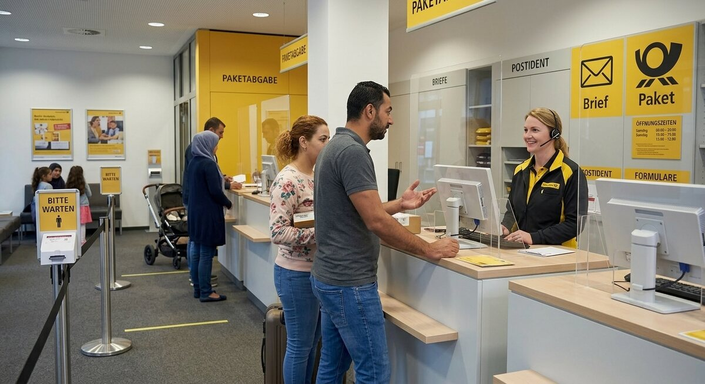

Teil 2 · Bild und Erfahrung
Karte 032
In der Postfiliale oder am Serviceschalter
Ausführliches Übungsmaterial zur Vorder- und Rückseite der Karte.

Ihre Aufgabe
- die Situation und den Ort
- was die Person erledigen möchte
- welche Informationen man dort braucht
- welche Erfahrungen Sie mit solchen Schaltern haben
- was guten Service ausmacht
Interaktives Sprechtraining
Mit ChatGPT sprechen üben
Kopiere zuerst die Übungsanweisung. Öffne anschließend die ChatGPT-App oder ChatGPT im Browser, starte den Sprachmodus (Voice Mode) und füge den Prompt in diesen Chat ein.
- Tippe auf „Prompt kopieren“.
- Öffne anschließend die ChatGPT-App oder nutze den Browser-Link.
- Melde dich bei Bedarf an und starte in ChatGPT zuerst den Sprachmodus (Voice Mode).
- Füge den bereits kopierten Prompt in den Chat des Sprachmodus (Voice Mode) ein und sende ihn ab.
- Beginne anschließend die Sprechübung.
- Wenn du die Übung beenden und Feedback bekommen möchtest, sage:
Die Übung ist beendet. Bitte gib mir jetzt Feedback.
Prompt anzeigen oder manuell kopieren
ChatGPT ist ein externer Dienst. Für den Sprachmodus (Voice Mode) musst du dich möglicherweise bei deinem ChatGPT-Konto anmelden und den Zugriff auf das Mikrofon erlauben. Verfügbare Funktionen hängen von deinem Gerät und Konto ab. Die Übung ersetzt keine offizielle Prüfungsbewertung.
Nützliche Satzanfänge
- Die Szene spielt wahrscheinlich …
- Die Person möchte vielleicht …
- Dafür braucht man oft …
- Ich kenne solche Situationen von …
- Guter Service bedeutet für mich …
Modellantwort anhören
Höre zuerst aufmerksam zu. Sprich danach nicht einfach alles nach, sondern bearbeite die Aufgabe mit eigenen Informationen.
Modellantwort
Die Szene spielt wahrscheinlich in einer Postfiliale oder an einem Serviceschalter. Eine Person steht am Tresen und spricht mit einer Mitarbeiterin. Vielleicht möchte sie ein Paket verschicken, ein Einschreiben abholen oder eine Frage zu einem Brief stellen. Solche Situationen wirken oft einfach, aber manchmal braucht man doch mehrere Informationen, zum Beispiel eine Adresse, einen Ausweis oder das richtige Formular.
Ich kenne solche Schalter aus meinem Alltag und finde sie mal leicht, mal etwas anstrengend. Wenn wenig los ist und die Informationen klar sind, geht alles schnell. Schwieriger wird es, wenn man das passende Wort nicht kennt oder wenn viele Menschen warten. Guter Service bedeutet für mich, dass Mitarbeitende freundlich sind, kurz erklären und geduldig bleiben. Dann fühlt man sich sicherer und kann auch Fragen stellen. Gerade für Menschen, die noch Deutsch lernen, machen solche kleinen Erfahrungen einen großen Unterschied.
Mögliche Prüferfragen und Antwortideen
-
Gehen Sie noch oft in die Postfiliale?
Antwortidee: Ja, besonders wenn ich ein Paket verschicken oder abholen muss.
-
Was war dort für Sie einmal schwierig?
Antwortidee: Manchmal waren Fachwörter oder Formulare nicht sofort klar.
-
Was erwarten Sie von gutem Service?
Antwortidee: Freundlichkeit, Geduld und klare Informationen.
-
Nutzen Sie lieber digitale oder persönliche Dienste?
Antwortidee: Beides, aber bei komplizierten Fragen lieber persönlich.
Wortschatz
| Deutsch | Englisch |
|---|---|
| die Postfiliale | post office branch |
| das Paket | parcel |
| das Einschreiben | registered mail |
| verschicken | to send |
| der Ausweis | ID card |
| das Formular | form |
| geduldig | patient |
| der Service | service |
Schnelltraining
Formulieren Sie zwei Fragen, die man am Schalter stellen könnte. Zum Beispiel mit „Wie viel kostet …?“ oder „Was brauche ich für …?“